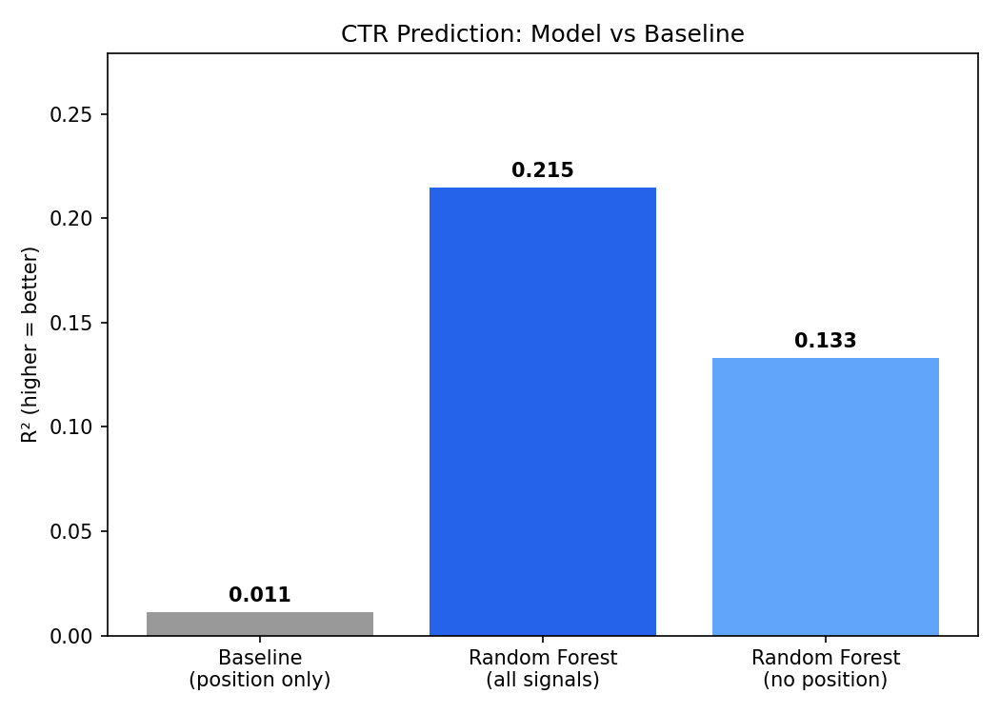
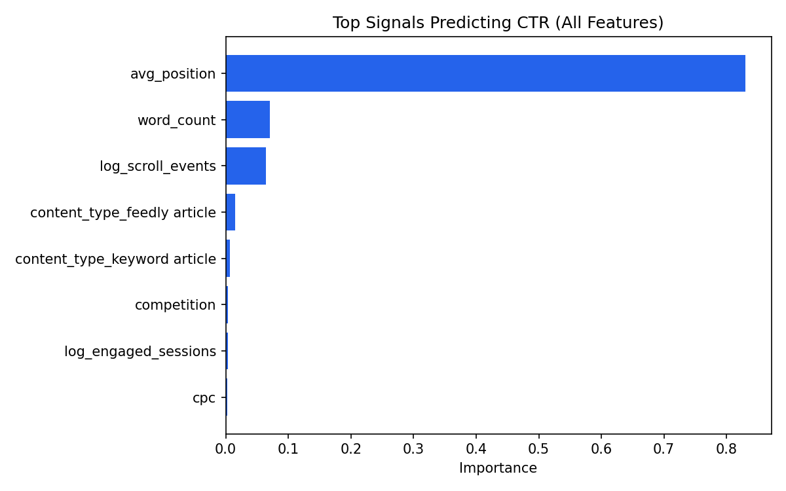
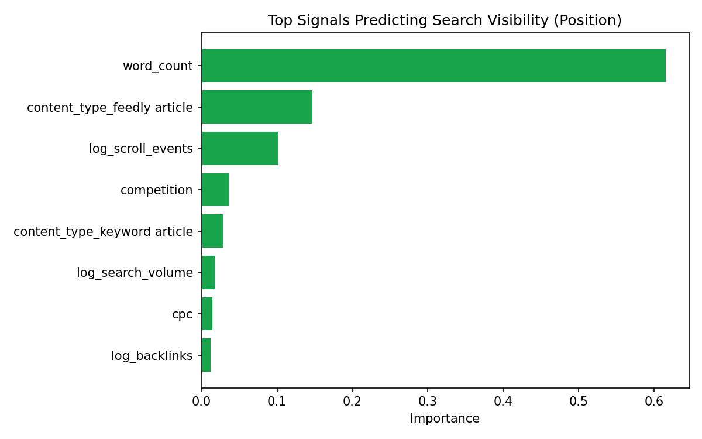

This paper studies content-level and engagement signals in a pseudonymized warehouse of 208,636 content items, testing which signals associate with two related outcomes: raw search visibility (average position) and click-through rate (CTR). A Random Forest model explains up to 25.5% of visibility variance and 21.5% of CTR variance — both well above naive baselines. Word count, content type, and scroll engagement emerge as the consistent top signals across both outcomes, while backlinks, search volume, competition, and CPC show little independent association with either. The findings are offered as decision-support for content prioritization, not causal proof.
Which search and engagement signals are most strongly associated with high search visibility, and how can these insights help prioritize SEO optimization?
Content teams manage far more pages than they can manually optimize. Given a limited editing budget, which properties of a page — its length, type, or on-page engagement — are worth auditing first? This paper treats that as a measurable question rather than a matter of intuition: it separates two related but distinct outcomes — visibility (how well a page ranks, measured by average search position) and conversion of that visibility (CTR, how often an impression becomes a click) — and asks which signals predict each.
Release: FlyRank Internship Pseudonymized Warehouse, version v20260703 — a frozen snapshot exported 2026-07-03. All client, content, and query identifiers are salted, namespaced, fingerprinted hashes; no raw client names, domains, URLs, or queries appear anywhere in this release.
Tables used:
Date window: confirmed directly from the data (not assumed from documentation) — 2026-06-01 through 2026-06-30.
Excluded, and why:
Assumptions: content-level signals (search volume, competition, backlinks, freshness) are treated as properties of a page going into the window, not outcomes of that month's performance — this keeps the analysis from being circular.
Labels (two outcomes modeled):
Features: search_volume, competition, cpc, backlinks, content_type, main_intent, word_count (from dim_content); avg_position, engaged_sessions, scroll_events (aggregated, from fact_content_daily_performance). Skewed numeric features log-transformed; categoricals one-hot encoded.
Baseline: linear regression predicting CTR from average position alone — the simplest defensible bar, since position is the best-known standalone CTR driver.
Model: Random Forest Regressor (scikit-learn), run in three configurations: all signals → CTR, content/engagement signals only (position excluded) → CTR, and content/engagement signals → avg_position directly.
Validation: random 80/20 content-level split (42,728 held-out test items).
Leakage checks: confirmed avg_position is a separate GSC metric, not derived from CTR; confirmed no content item appears in both train and test; excluded any same-window metric that could only be known after the fact relative to the label being predicted.
All models evaluated on the same held-out test split. Two outcomes modeled: CTR and average position (visibility).
| Model | Features | RMSE | R² |
|---|---|---|---|
| Baseline (linear) | avg_position only | 0.0353 | 0.011 |
| Random Forest | all signals | 0.0314 | 0.215 |
| Random Forest | no position | 0.0330 | 0.133 |
| Model | Features | RMSE | R² |
|---|---|---|---|
| Random Forest | content + engagement signals | 19.87 | 0.255 |

Missing: assets/artifact_1_ctr_model_comparison.png — add this file from your notebook export.The position-only linear baseline explains almost none of CTR's variance (R² = 0.011) — the position–CTR relationship is not well captured by a straight line. The full Random Forest roughly doubles this to 0.215, and even with position excluded, content/engagement signals alone still explain 0.133 — showing they carry value independent of ranking position. Notably, the same signals predict visibility itself (position, R² = 0.255) even better than they predict CTR without position — content-level signals appear more tied to getting found than to converting that visibility into clicks.
| Signal | Correlation |
|---|---|
| log_scroll_events | −0.187 |
| log_search_volume | +0.123 |
| log_engaged_sessions | −0.110 |
| word_count | −0.106 |
| cpc | +0.082 |
| competition | +0.056 |

Missing: assets/artifact_2_ctr_feature_importance.png — add this file from your notebook export.'">
Missing: assets/artifact_3_position_feature_importance.png — add this file from your notebook export.'">Top opportunity pages — content already reasonably visible (position ≤ 20) but underperforming its predicted CTR. Loaded live from the notebook export:
| Content ID | Position | CTR | Predicted CTR | Word Count | Type |
|---|---|---|---|---|---|
| Loading assets/artifact_5_top_opportunity_pages.csv… | |||||
Ordered by strength of observed association across both outcomes. Framed as decision-support — testable hypotheses to prioritize, not guaranteed outcomes.
word_count is the top driver of visibility (61.5% importance) and the top content signal for CTR once position is excluded (45%). Highest-confidence, most actionable lever identified.
High confidencecontent_type shows strong independent association with both visibility (14.7%) and CTR (31%). Audit performance by content type before applying blanket changes across the library.
High confidenceScroll events correlate with better position (−0.187) and CTR, but engagement happens after a click — this may reflect well-ranked content attracting engagement, not the reverse. Flagged for follow-up research.
Needs follow-upHigher search volume associates with worse position (+0.123), consistent with high-volume keywords being more competitive. Useful for interpretation, not something a content team can directly change.
Context onlyPosition dominates CTR feature importance (~83%) but a position-only model barely explains CTR alone (R² = 0.011). Pair ranking efforts with content-quality signals above.
High confidenceBoth show under 5% importance across every model version in this analysis — lower priority relative to content-level signals for these two outcomes specifically.
High confidenceThis analysis only covers content with measurable visibility. The excluded half of the library is a distinct, likely higher-impact problem worth its own investigation.
Next studyAll notebooks and the modeling code referenced in this paper are versioned in the project repository: